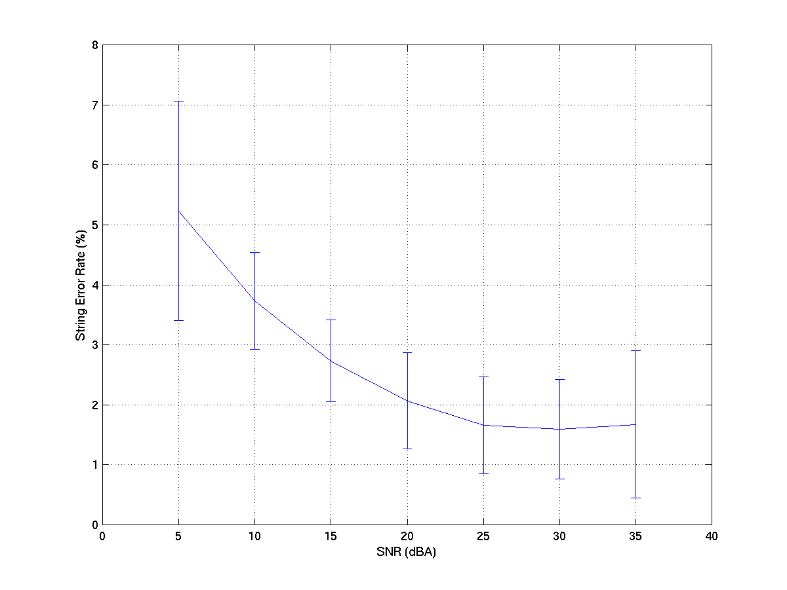

AUDIO HARDWARE RECOMMENDATIONS FOR THE CERENCE ASR ENGINE
Cerence BVBAGuldensporenpark 40B-9820 Merelbeke, BelgiumV5.1, July 2019© 2010-2019 Cerence, Inc.All rights reserved.Cerence, the Cerence logo, “A Moving Experience” and Cerence ASR aretrademarks and/or registered trademarks of Cerence, Inc.,and/or its affiliates in the United States and/or other countries.
Copyright:
© 2010-2019 Cerence, Inc. All rights reserved. No part of this publication may be reproduced or transmitted in any form or by any means, electronic or mechanical, including photocopy, recording or any information retrieval system, without the written permission of Cerence.
Trademarks:
WINDOWS® and MICROSOFT® VISUAL C++ are registered trademarks of their respective owners. Cerence, and the Cerence logo, “A Moving Experience”, and Cerence ASR are trademarks and/or registered trademarks of Cerence, Inc., and/or its affiliates in the United States and/or other countries.
Contents
INTRODUCTION
In order to deploy successfully an automatic speech recognizer like Cerence ASR, the application developer needs to pay sufficient attention to the following issues:
- audio quality: the audio hardware should be designed to ensure that the speech recognizer receives properly conditioned audio input
- computing resources: sufficient memory and processing power should be available to achieve the required speed and to be able to support adequate application grammars
- grammar or SLM design: grammars should be designed to lead to the desired level of flexibility and user friendliness while maintaining sufficient accuracy.
- parameter tuning: based on application data, the parameters controlling the ASR engine should be set such that the recognizer is well-behaved regarding speed, accuracy, sensitivity, rejection…
This application note deals with the first aspect: audio quality requirements and resulting constraints on the audio hardware.
The Cerence ASR speech recognition engine contains several algorithms and techniques that will make it robust to variations in audio parameters such as speech level, noise level, noise spectral shape and bandwidth limitations. However, careful design of the audio input channel is advantageous for the recognition accuracy and robustness of the recognizer.
The recommendations in this note apply to usage on embedded devices, in-car implementation, industrial usage, and PC multimedia or game applications.
THE AUDIO CHAIN
The audio chain consists of the microphone, the electronics following it (filters, amplifier, gain control…) and the A/D Converter (ADC). The output of the audio chain is the digitized speech signal fed to the ASR engine. In order to maximize the performance of the recognizer, this output should comply with a series of quality requirements. These audio quality requirements concern:
- the speech level and speech dynamic at the input of the ADC,
- the sampling frequency and sampling resolution of the digital signal at the output of the ADC,
- the overall signal bandwidth,
- the distortion and noise in the audio chain,
- the ambient (acoustic) noise at the microphone.
The audio quality requirements are detailed in the next section. Failure to comply with these requirements will usually result in sub-optimal performance.
Recommendations on audio chain design and audio hardware selection so as to meet the audio quality requirements are given in the last section of this document.
AUDIO QUALITY REQUIREMENTS
Speech Level and Gain Control
The Cerence ASR engine is not sensitive to the speech level as such. However, the signal should be properly scaled so that, on one hand, clipping, or other non-linear distortions by the microphone amplifier or A/D converter are avoided and, on the other hand, sufficient SNR with respect to the amplifier and quantization noise is available. In most cases it is best to allow for some clipping on unusually loud signals than to have low-level signals drowned in quantization noise when the A/D resolution is limited.
The speech signal should be scaled so that the peak signal level is about 4 times smaller than the full scale of the A/D converter under normal loud operation of the device. This will provide sufficient headroom (i.e. 12 dB or 2 bits) to avoid clipping of the speech signal, while still providing sufficient dynamic range for 14-bit (or more) A/D converters (see section on Signal Resolution and Sampling Frequency below). With normal loud operation is meant: a male speaker speaking up (without shouting) while driving at highway speeds, at normal distance from the microphone. When using an artificial head/torso to adjust this gain, this loud speech level approximately corresponds to a 100dB unweighted SPL level, at the Mouth Reference Position of the artificial head. The Mouth Reference Position is 2.5cm in front of the lip plane of the artificial mouth.
The speech level (amplifier gain) should preferably be set prior to recognition. That is, either at design time or at run-time during a “sound-check” procedure. If needed, the gain can be controlled automatically, e.g. by an AGC, but the gain variations during the speech utterances should be slow enough so as not to impact the recognition process.
Signal Resolution and Sampling Frequency
The A/D Converter should provide an effective dynamic range of 12 bits for the speech signal. Accounting for the 2-bit headroom and the fact that the least significant bits of ADCs are often random (because of electronic and quantization noise), this implies that a 16-bit ADC should be preferred. The resolution of the ADC can be reduced only when the signal is properly scaled so as to reduce the risk of clipping (e.g., via a good quality AGC) and when the electronics components are of good quality so as to minimize electronic and quantization noise, e.g. a real 14-bit ADC may be used. 16 bits ADCs remain strongly advised though.
The Cerence ASR engine natively supports 16kHz audio sampling frequency and it supports the possibility to downsample the input signal from a higher sampling frequency to the above sampling frequency (See also paragraph Frequency conversion below).
Anti-alias filters should be used to prevent the aliasing of high frequency components while preserving the speech bandwidth of interest. The attenuation of the anti-alias filter at the Nyquist frequency should be 20dB or better with a high order roll-off.
Overall Bandwidth
The combined transfer function of the microphone and of the electronics should present a smooth or flat frequency characteristic in the required signal bandwidth. Table 1 summarizes the signal resolution, signal bandwidth and sampling frequency requirements of the Cerence ASR engine. For the 16kHz version, using a cutoff frequency larger than 7 kHz will result in a small accuracy improvement (using a 7.3 kHz cutoff frequency can result in up to 5% relative improvement of the recognition accuracy). Passband ripples of up to 3 dB and a roll-off of up to 6 dB over the full bandwidth can be tolerated. Notch filters should not be part of the audio channel.
It may be advantageous to actively filter the signal below 200Hz when dominant low frequency noise is present, such as in cars. This will allow an increase of the speech signal level without clipping caused by low frequency noise. The high-pass filter pass-band frequency characteristics should not affect the overall frequency response requirements.
ADC Resolution Sampling Frequency SignalBandwidth 16 bits (14 bits) 16 000 Hz 250 - 7300 Hz Table 1: Supported sample rates and ADC resolutions
Non-Linear Distortion and Noise in the Audio Chain
DC-Offsets throughout the Chain
The Cerence ASR engine is not directly sensitive to DC offsets. However, asymmetry in the amplifier and A/D converter should be limited in order not to compromise the effective full signal range of the ADC. DC transients should similarly be avoided.
Electrical Noise and Interference
After tuning all signal gains as explained in Speech Level and Gain Control, the total electric noise and interference signal should be smaller than 3 bits. This includes noise introduced by the microphone power supply, amplifier, ADC, etc. Hum or other periodic interferences should be reduced to amplitude of 70dB below full range.
Non-Linear Distortion
Analog distortion in the microphone, amplifier, or electronic input circuit is not critical if well below the audible threshold.
Similarly, if transmission links such as wireless FM links are used, they should not distort the signal. The total harmonic distortion (THD) should be kept below 1%.
As mentioned previously, clipping of the input signal at the A/D conversion stage should be avoided. However, small levels of ADC clipping can be tolerated on unusually loud signals.
Ambient Noise
The presence of background noise adversely affects the performance of a speech recognition engine. Speech recognition accuracy is strongly dependent on the signal-to-noise (SNR): lower SNR values lead to lower recognition accuracy.
In the context of speech processing, there are several ways to define the SNR. In this document, the SNR is defined as the ratio (in dB(A)) of the average signal level during the speech segments of the signal to the average signal level during the silence/background noise segments of the signal, with a A-frequency weighting [IEC]. This is the so-called “A-weighted biased segmental SNR”. Note that using different definitions or even different tools to measure SNR on speech signals make comparisons of values difficult.
The SNR of the signal fed into the recognizer should ideally be equal to or better than 20dB(A) for stationary noise sources. When the SNR degrades, the error rate will go up, gradually at first, and then more sharply. The actual SNR limit depends on the characteristics of the noise (spectral shape, temporal properties) and on the complexity of the recognition task that must be performed. For instance, for stationary car noise on a simple command and control task, an SNR as low as 10dB(A) can be tolerated. Figure 1 give a typical example of the evolution of the error rate as a function of the SNR for a command & control application in a car driving at various speeds.
Loudspeaker Feedback
A speech recognition engine is sensitive to non-stationary background sources
such as acoustic echo from music, background speech, or dialogue prompts. In
embedded devices, the distance from loudspeaker to microphone is typically
small, leading to loudspeaker-microphone feedback. In automotive, the output
level of loudspeakers is generally high, also leading to loudspeaker-microphone
feedback. Feedback from loudspeakers to the microphone should be eliminated by
muting the loudspeaker signal when the recognizer is active or by a careful
placement of loudspeakers and directional microphone such that leakage of the
loudspeakers is 30 dB below the speech signal. In other cases, adaptive echo
cancellation (AEC) may have to be used to obtain sufficient attenuation of
the loudspeaker signal. However, if echo cancellation is used, careful design
of the AEC algorithm is needed to prevent distortion of the speech signal fed
to the recognizer. Some additional considerations of audio hardware requirements
for AEC can be found in [AEC].
Figure 1: Error rate as a function of the SNR for a command & control application in a car.
HARDWARE RECOMMENDATIONS
The audio quality requirements of the previous sections translate into a series of recommendations for the various components of the audio chain hardware.
Microphone
Directional-type microphones are preferred. The main lobe size depends on the intended usage of the device and the position of the speaker relative to the microphone. Under normal operation, the speaker should remain inside the main lobe of the microphone directivity pattern. The microphone should be placed as close as possible to the speaker in order to maximize the SNR.
The microphone should comply with the bandwidth requirements of the previous section.
In-Car Microphones
For in-car operation, the type of the microphone and its position with respect to the speaker can greatly influence the speech recognition performance [SMOL]. The optimal microphone setup is dependent on both the car cabin acoustical properties and the position of the speaker (driver and/or passenger). Typical positions include microphones mounted on the A-pillar, on the roof above the driver, on the rear-view mirror, and on the dashboard. As a rule-of-thumb, best speech recognition results are achieved when the microphone is directed toward the speaker and positioned as close as possible to the speaker mouth.
Production microphones for automotive application may present significant variations in gain and characteristics. This should be taken into account when selecting a microphone and setting up the audio channel. The tolerance on the microphone characteristics should be such that different samples will comply with the specification set forth in this document.
Close-Talk Microphones
When a close-talk microphone (e.g. a headset-mounted microphone) is used, the microphone should be positioned as close as possible to the mouth to maximize SNR, but should not be positioned directly in front of the mouth to avoid capturing breath noises, lip-smacks, and other mouth-produced noises. For example, the boom of a headset-mounted microphone should be adjusted so that the microphone is located at the corner of the mouth, about 2 cm from the lips’ corner. If possible, a sound-check procedure can be included in the application to make sure that the microphone is correctly positioned and delivers the proper signal levels.
For operation in noisy environment, noise-canceling close-talk microphones are preferred.
Microphone Arrays
Microphone arrays or other forms of multi-microphone solutions can be deployed with Cerence ASR. When properly set-up, multi-microphone solutions can improve the SNR of the speech signal and lead to recognition accuracy improvements. However, they should be configured carefully to make sure their noise rejection properties do not come at the cost of signal distortion that would adversely affect the recognizer’s operation. The resulting global audio processing chain must still comply with all other signal quality requirements: bandwidth, distortion, linearity, and other requirements listed earlier in this document. In practice, experimentation will be necessary as the behavioral characteristics of microphone arrays vary widely. The microphone array system should be looked at as a whole, including post-processor such as residual noise cancellers.
Two special topics deserve attention when using microphone array or other advanced signal processing techniques
- The adaptation mechanisms in adaptive microphone arrays can interfere with the adaptive mechanisms in the recognizer. If adaptation occurs in the microphone array, it should be carefully designed to minimize the interference. For instance, the speech channel’s frequency response should not vary rapidly; noise rejection should not change significantly during the speech segments, etc.
- Signal enhancement techniques often have a trade-off between the level of noise removal and the level of signal distortion they introduce. Speech recognizers are more sensitive to signal distortion than humans. Therefore, systems tuned for the best perceptual signal quality will generally not be optimal for speech recognizers. They will have to be retuned for a different operating point with less signal distortion and less noise removal.
Microphone Sensitivity
The microphone sensitivity should be selected to match the microphone input circuitry and the acoustic signal level conditions in the intended mode of operation.
More sensitive microphones do not always yield better performance as they may also capture more background noise.
External Noise Cancellers
Since Cerence ASR already includes sophisticated internal noise cancellation, no gain is expected from external noise cancellers in normal operating conditions. If an external noise canceller cannot be turned off or removed, it should be tuned for operation with the Cerence ASR engine. The comments of the microphone array section on advanced signal processing techniques do also apply.
Electronics & Transmission Links
The electronics includes the microphone preamplifier, the input amplifier and gain control, optional filters (e.g., high-pass filters), transmission channels (e.g., wireless links)… that are present between the microphone and the ADC.
Bandwidth, DC-offset, noise and non-linear distortion should comply with the audio requirements of the previous section.
The ADC integration requires some care to prevent spurious noise (e.g. coming from the digital section of the board) from degrading the audio signal.
If an analog transmission link such as a FM wireless microphone link is used as part of the audio chain, it should not introduce perceptible distortion of the signal.
Similar conditions apply to digital transmission links. In particular, when digital data compression techniques are used, the restored PCM data should comply with all the requirements set forth in this document and present small signal distortion level when compared to the original uncompressed signal. For instance, ADPCM with a compression ratio of 2:1 does not yield measurable degradation of speech recognition performance. However, aggressive speech compression schemes should be avoided.
Frequency Conversion
If sampling frequencies have to be converted (e.g. downsampling a 48 kHz audio data stream on a MOST bus to 16 kHz), the downsampling filter has to be carefully designed to avoid the introduction of harmful artifacts. Keep in mind that avoiding conversion completely is the preferred way (conversion takes CPU time and may degrade accuracy).
For the Cerence ASR engine, you can use the downsampler module provided inside the engine. This is required when using the Speech Signal enhancement module in front of Cerence ASR together with so-called side-band information. When you use the subsampler, the engine accepts a number of predefined sampling frequencies (see the documentation of the Cerence ASR).
Automatic Gain Control
In general we strongly recommend against using an AGC mechanism with ASR. Fixed gain settings are preferred. However, if an AGC is required (e.g. because an ADC with less than 16-bit resolution has been selected), it should be optimized to work with the ASR application.
The Cerence ASR engine comes with a built-in AGC algorithm that is designed to work transparently for the user.
If an external AGC is used, it should be carefully designed so as not to affect the performance of the recognition engine:
- The AGC circuit should distinguish between speech and silence. This to avoid that the AGC misinterprets the silence or background noise as a low speech signal and increases gain accordingly, leading to the first utterance when the speaker resumes speaking being over-amplified.
- The AGC gain adjustments can interact negatively with the internal dynamic adjustments in the ASR software and result in degraded recognition performance. To prevent this from happening, the AGC should work with long attack and decay time constants on the order of 3 to 5 seconds.
A/D Converter
A 16-bit A/D converter is preferred. An effective dynamic range of 12 bits for the speech signal at the output of the ADC is mandatory. Hence, only when the signal can be properly scaled, the resolution of the ADC can be reduced below 16 bits.
REFERENCES
| [SMOL] | “On the Importance of the Microphone Position for Speech Recognition in the Car”, Johan Smolders, Tom Claes, Gert Sablon & Dirk Van Compernolle, Proceedings IEEE ICASSP 1994, vol. I, pp. 429-432. |
| [AEC] | Audio Hardware Requirements for Nuance ASR/AEC Engines, Otto Linnemann, Nils Rohrer and Christina Veenhues, Application Note, Nuance Aachen (now Cerence Aachen). |
| [IEC] | IEC/CD 1672: Electroacoustics-Sound Level Meters, Nov. 1996. |